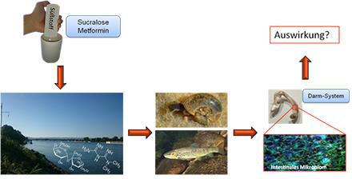

Die Arbeitsgruppe Mikrobiologie/Molekularbiologie des Karlsruher Instituts für Technologie (KIT-IFG) unter der Leitung von Prof. Dr. Thomas Schwartz untersucht den Einfluss künstlicher Süßstoffe und Antidiabetika auf die Darmflora von Wasserorganismen.
Während die Wirkungen dieser chemischen Substanzen beim Menschen schon teilweise bekannt sind, wissen wir noch kaum etwas über die Effekte auf aquatische Lebensgemeinschaften und das Ökosystem. Beim Menschen führt ein Teil dieser sogenannten „Wohlstandschemikalien“ zu unerwünschten Effekten in der Darmflora und löst dadurch Krankheitsbilder aus. Basierend auf diesen Erkenntnissen untersucht das Forscherteam am KIT-IFG mit modernen Methoden der Molekularbiologie, wie künstliche Süßstoffe und Antidiabetika die bakterielle Darmflora von Fischen und Mollusken beeinflussen.
Denn diese Stoffe stehen unter Verdacht, auch die Mikrobiome der in Gewässern lebenden Organismen zu verändern und damit Krankheiten auszulösen. Gezielt werden Veränderungen in den Zusammensetzungen der bakteriellen Darmflora mit Vitalitätsmarkern der untersuchten Organismen korreliert, um daraus potentielle Risiken für die Organismen und für das Ökosystem Wasser abzuleiten.
 Auswirkungen von Süßstoffen
Prof. Dr. Thomas Schwartz
Karlsruher Institut für Technologie
Abteilung Mikrobiologie an Natürlichen und Technischen Grenzflächen
AG Mikrobiologie / Molekularbiologie
Hermann von Helmholtz Platz 1
76344 Eggenstein-Leopoldshafen
+49 (0)721 60 82 68 02
thomas.schwartz@kit.edu


Das Projekt wird vom Land Baden-Württemberg im Rahmen des Wassernetzwerkes gefördert.
Laufzeit: 2016 bis 2021
Prof. Dr. Thomas Braunbeck
Aquatische Ökologie und Toxikologie
COS - Centre for Organismal Studies
University of Heidelberg
Im Neuenheimer Feld 504
D-69120 Heidelberg
braunbeck@uni-hd.de
Tel.: +49-(0)62 21-54 56 68